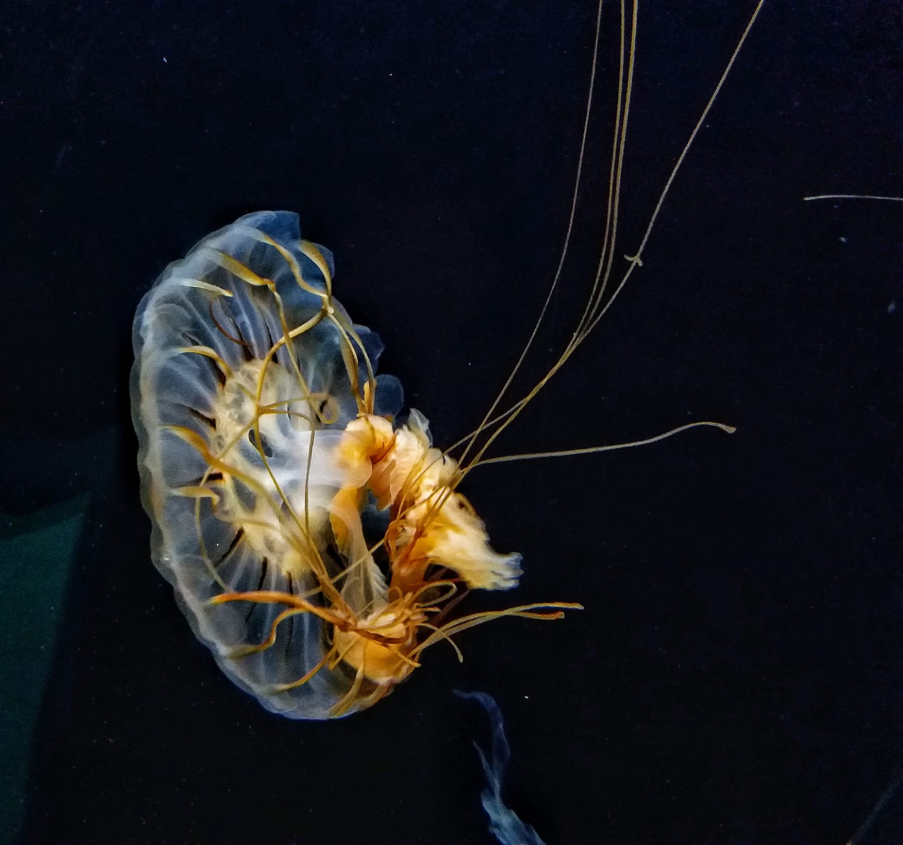
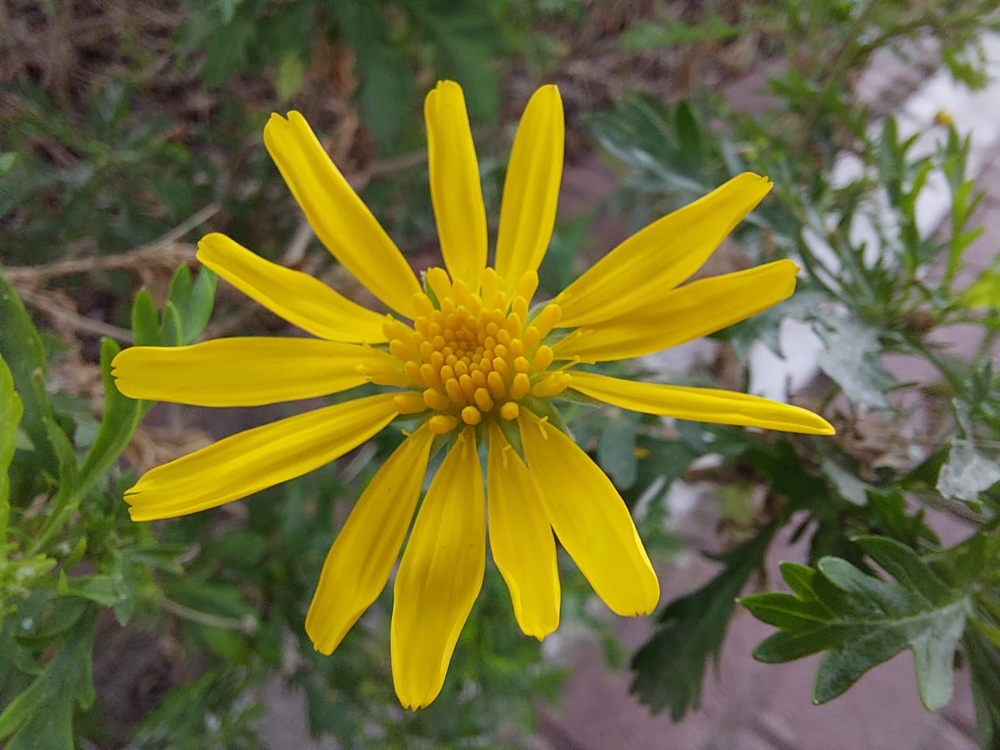
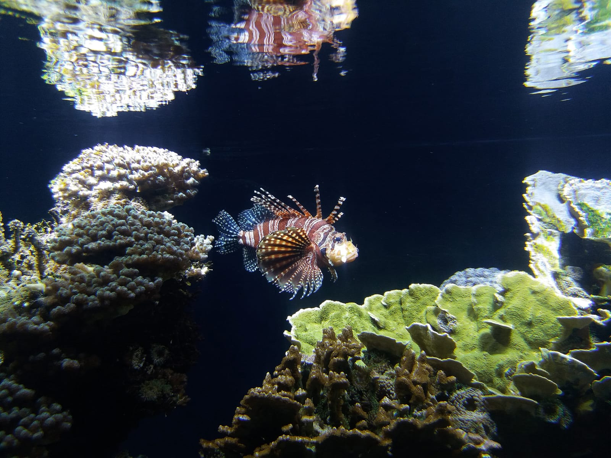

LUCIA LOURENGO CARIDADE
Presentacion
Soy Lucia Lourengo Caridade, actualmente estoy estudiando la carrera de Ingeniería en Informática en la UBA.
Tengo conocimientos en lenguaje C, Python y lo básico de Java.
Desde hace 10 años juego al basket como hobbie. Por la pandemia tuve que dejar de competir y estoy aprovechando
ese tiempo para hacer cursos y ampliar mis conocimientos en programación.
Hobbies
Basket
Empece a entrenar basket cuando tenia 11 años. Desde los 13 años estoy federada y juego de forma competitiva.
Los clubes en los que jugue son:
- Club Harrods Gath & Chaves (2010-2014)
- Club Centro Galicia de Buenos Aires (2014-2017)
- Club Telefonos de Buenos Aires (2017-2018)
- Club Banco Provincia (2018- actualidad)
Fotografia
Desde el 2019 estoy interesada en la fotografía. Antes apretaba un botón, sacaba una foto, me fijaba si estaba nítida y listo. Ahora me tomo más tiempo y me fijo en cosas que antes me parecían irrelevantes como en el enfoque, la iluminación, el contraste, etc. Me gustaría en un futuro hacer algún curso para aprender más al respecto. Comparto algunas fotos que tomé:
  